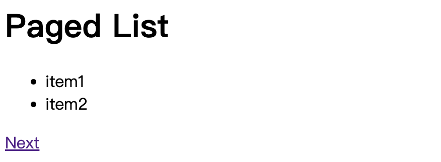

一樣來做個筆記。
Config
推薦閱讀：https://www.11ty.dev/docs/config/
在根目錄建立 .eleventy.js，這個檔案就是 11ty 的 config，可以在裡面寫入我們想要的設定：
1 | module.exports = function (eleventyConfig) { |
Basic Structure
1 | ├── _site |
學任何一項知識前，先理解專案結構是很重要的一部分，所以這邊分別說明一下：
_site是產生後的靜態檔案src進入點src/_includes放置樣板的地方src/_includes/layouts/base.html樣板一（整個網站的基礎結構）src/index.html網站首頁
運用樣板來取代 Hardcode
延續剛剛的檔案結構，假設目前首頁（src/index.html）內容是這樣：
1 | <!DOCTYPE html> |
看起來就是一般的 HTML，沒什麼問題。但有一個問題是「如果我想要再新增其他頁面呢？」
假設現在想新增一個「關於我」的頁面，那我可能就需要再寫一份 about.html：
1 | <!DOCTYPE html> |
可以看到我們只修改了 <title> 和 <body> 中的內容，而其他部分是一模一樣的。
這顯然不是一個很好的做法。
在非必要的情況下我們會盡可能避免「Hardcode（寫死）」的作法，所以 11ty 中可以透過 Nunjucks 這套模板引擎來處理。
首先，我們可以在 src/_includes/layouts 底下建立一個 base.html，並填入底下內容：
1 | <!DOCTYPE html> |
一般來說，你應該是建立一個
.njk檔案，才接著在裡面寫 HTML，而不是像這邊建立一個 .html 檔案，然後直接在裡面寫 nunjucks 的語法。
為什麼？因為正常的 HTML 並沒有辦法解析 nunjucks 的語法。這邊之所以能這樣做是因為前面在.eleventy.js中有寫入對應的設定，所以 eleventy 才會知道要用 nunjucks 去解析 .html 檔案的內容。
模板的好處就是可以在裡面加入「變數、流程判斷」等程式語言的特性。這邊在 <tilte> 中放入了一個 {{ title }}，意思是說裡面的文字要是 title 這個變數的值，而 <body> 也是同樣的概念。
不過你可能會想問「那 title 和 content 這兩個變數要從哪裡來？還有，content 後面的 | safe 又是什麼東西？」
回答第一個問題前，我們先把 src/index.html 做點修改：
1 | --- |
註：再提醒一次，之所以能直接在 HTML 中寫 Front Matter 的語法是因為在 eleventy.js 中有做設定。
把東西寫在 --- 裡面的這種寫法叫做「Front Matter」，是 markdown 提供的一種語法，一般是用來寫入網頁的 meta 資訊。
這裡在 Front Matter 中指定了 layout: layouts/base.html，代表說這邊的內容要套到用前面寫好的樣板，並且也指定了 title 的內容。
看到這邊，應該不難猜到 title 和 body 這兩個變數的值就是從這邊來的，值會是 Learn 11ty 和 <body> 中的內容。
至於第二個問題，要先知道 | 是 nunjucks 中的 Filter。功能就跟 CLI 裡面的那個 | 差不多，會把前面的東西「接過來」做一些處理。
所以這裡的 | safe 很明顯是把前面的字串都做「跳脫」的處理，主要是為了避免 XSS 的問題。
除了上面這種拿寫好的樣板來用以外，nunjucks 還提供了很多功能，像是 extends 或 include 等等，在實務上會蠻常看到它們的，所以強烈建議碰到不懂的語法時可以到 nunjucks 的 官方文件 中查閱。
讀取靜態資源
推薦閱讀：https://www.11ty.dev/docs/copy/
假設目前專案的資料結構長這樣：
1 | ├── package-lock.json |
這時候你可能會想在模板中存取在 assets 中靜態資源，這些資源可以是圖片、影片或 CSS 等等。不過當你寫好路徑後你會就發現存取不到，這是為什麼呢？
這是因為 11ty 預設不會把 .html 以外的檔案或資料夾產生到 _site 底下，所以必須在 config 加入 addPassthroughCopy 來處理：
1 | module.exports = function (eleventyConfig) { |
設定好 11ty 以後整個 assets 就會被複製過去，自然就能讀取到對應的資料了。
像元件一樣的 Shortcode
推薦閱讀：https://www.11ty.dev/docs/shortcodes/
11ty 提供了 Shortcode 的功能，讓你可以用很像 Component 的概念來封裝一段 HTML，我們直接來看範例。
首先到 _includes 底下建立一個 Card.js：
1 | const { html } = require('common-tags') |
註：這邊的 html（樣板字串）是 common-tags 提供的功能。
接著到 .eleventy.js 加入這段：
1 | // 別忘了引入 |
接下來在模板中就可以這樣使用：
1 | {% Card title="Hello", link="https://google.com", linkText="Go to Google" %} |
註：記得要每個參數間要用 , 來隔開。
Collections
推薦閱讀：https://www.11ty.dev/docs/collections/
collections 是用來存取在 Front Matter 中有使用 tags 標註的內容，例如說：
1 | --- |
想像這是部落格裡面的某一篇文章，並且把 tags 設為 posts，這樣的用途是什麼？
在 11ty 中 tags 是一個比較特別的屬性，一旦設置了這個屬性後就會 11ty 就會自動產生一組對應的 collections。以上面的例子來說，我們設置了 tags: posts，所以就會產生一組叫做 posts 的 collections。
collections 可以做什麼？這邊來舉個例子。
假設你想要有一個顯示「文章列表」的頁面，你可以透過 collections 來把所有 posts 的文章資料都拿出來：
1 | <h1>Posts</h1> |
這裡用了迴圈來遍歷 collections.posts 這個陣列，並且把文章的 url、title 和 date 給取出來渲染到畫面上。
就跟前面說的一樣，只要有使用 tags: posts 的文章都會出現在 collections.posts 中，這是 11ty 自動在背後幫我們產生的 collections，所以我們才可以直接在模板中存取到。
除了文章自身的 Front Matter 資訊以外，11ty 也會自動加入一些有用的資訊，像這裡就用到了 url，這是很有用的資料！
建立自己的 collections
除了透過 tags 來產生 collections 以外，也可以透過 .eleventy.js 來添加我們自己的 collections。
雖然剛剛有說我們可以在每一篇文章加上 tags: post 來產生 collection，但如果每一篇文章都要自己手動加其實還蠻麻煩的，對吧？
所以我們可以直接告訴 11ty「請直接幫我把 xx 路徑底下的所有 .md 檔案建立成一份 collections」，像這樣：
1 | module.exports = function (eleventyConfig) { |
這邊用了 addCollection 來建立一個新的 collections（post），接著在傳入一個 callback 來回傳這個 collections 的內容。這個 callback 會自動接收一個 collectionApi。如其名，它就是個 11ty 提供的 API，你可以用它來取得你想要的資料，這邊是用 glob 語法來把所有 src/blog/posts 底下的 .md 檔都取出。
透過這段設定後，就不需要再幫每一篇文章都加上 tags: posts 了，可以直接透過 collections.posts 來存取相同的資料。
Pagination
推薦閱讀：https://www.11ty.dev/docs/pagination/
「分頁」應該是很常見的需求，所以這邊來介紹如何在一個頁面中透過分頁來顯示部分資料。
基本範例
分頁背後的原理是利用單一個 template 來產生出多個 template，因為只要讓每一個 template 拿到的資料是不同的，就能渲染出不同的內容了。
這邊來看官網附的範例：
1 | --- |
假設這個頁面是在 /paged 路徑的話，11ty 就會拿這個模板出產生出 _site/paged/index.html 和 _site/paged/1/index.html 兩個頁面。
要啟用 pagination 的步驟有兩個：
- 在 Front Matter 中加入
pagination。data是用來產生分頁的資料來源，size則是每一個頁面要顯示幾筆資料 - 透過
pagination物件把資料渲然到 template 中
聽起來不複雜吧！不過重點是 pagination 的內容是什麼？官方已經很貼心的先幫你列出來了：
1 | { |
所以上面用 for item in pagination.items 就可以把當前頁面的資料取出並渲染出來。
11ty 的 pagination 物件提供了很多的有用的資訊，只要知道如何利用這些資訊就可以完成大多數的分頁功能囉。
換頁功能
前面已經介紹過分頁的處理，現在來加上「切換頁面」的功能吧！一樣先來看段範例：
1 | --- |
結構上跟前面的範例差不多，現在只是多用了 pagination.href 的資訊來加上上一頁和下一頁的按鈕而已，相信應該不難理解。
最後渲染出來的畫面會長這樣：

如果你想改成頁碼的形式的話，也可以這樣寫：
1 | --- |
註：頁碼的寫法有很多種，也可以參考官方提供的 範例。
這樣子按鈕就會用 1 2 3 4... 的方式來呈現，不過這裡只是示範基本概念，細節的部分就交給你來處理囉！